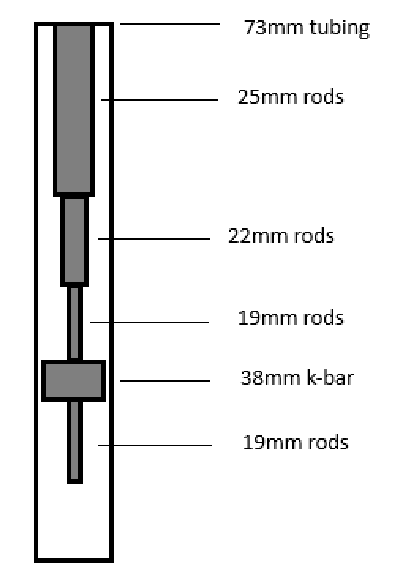
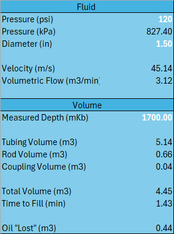
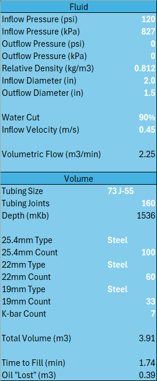
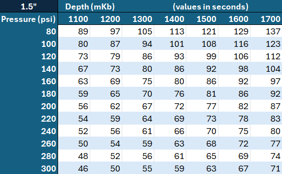
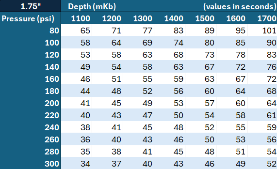
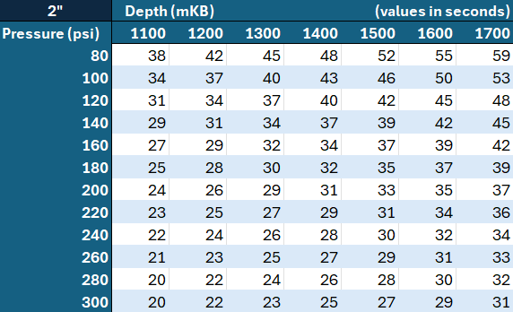

Production Engineering Project
Flowline-Based Tubing Leak Diagnostic Tool
Developed an engineering decision-support tool to evaluate the feasibility of using existing battery flowline pressure for tubing leak diagnosis in downed wells. The project combined fluid flow modeling, tubing volume calculations, economic analysis, and calculator development to estimate tubing fill times and support field implementation.
By replacing conventional pressure truck testing with a flowline-based testing method, the analysis suggested potential annual cost reductions of up to 80% while maintaining diagnostic capability.
Problem Statement
Tubing leak diagnosis in downed wells was traditionally performed using pressure trucks at an average cost of approximately $1,000 per test. In previous years, pressure testing expenditures exceeded $500,000.
An alternative field method involved shutting in the battery groupline and using existing line pressure to fill the tubing string. If the tubing failed to fill or pressure decayed unexpectedly, a tubing leak could be inferred.
Objective
Determine whether existing battery flowline pressure could be used as a practical alternative to conventional pressure truck testing by estimating expected tubing fill times under representative operating conditions.
Establishing a reliable fill-time reference would allow operators to distinguish between normal fill behavior and potential tubing failures while reducing pressure testing costs.
Engineering Investigation
1. Production System Characterization
Battery-level operating variables were collected, including water cut, line pressure, and average daily production rate. These variables were used to estimate available flow conditions and oil displacement during testing.
2. Tubing Volume Modeling
Reference tables were developed using standard tubing and rod dimensions to calculate the annular volume between the tubing string and rod string.
3. Flow Modeling
Average production rates from representative batteries were used to estimate field-average flow rates and expected tubing fill times.
4. Economic Evaluation
Conventional pressure truck testing costs were compared against the estimated costs of a flowline-based testing method to evaluate potential operating expense reductions.
System Model & Key Calculations
| Battery | Water Cut | Pressure | Relative Daily Production |
|---|---|---|---|
| A | 92% | 150 psi | 120 m³ |
| B | 85% | 125 psi | 500 m³ |
| C | 79% | 105 psi | 160 m³ |
| D | 88% | 115 psi | 450 m³ |

3.91 m³
Total Annular Volume
12.95 m³/hr
Average Flow Rate
18 min
Estimated Tubing Fill Time
$205
Estimated Product Loss per Test
Flow Modeling Results
| Average Production Rate | 310.85 m³/day |
| Average Flow Rate | 12.95 m³/hour |
| Estimated Fill Time | 18 minutes |
| Average Water Cut | 86.1% |
| Estimated Oil Displacement | 0.54 m³ |
| Estimated Product Loss | $205 per test |
Economic Analysis
| Scenario | Annual Cost |
|---|---|
| Pressure Truck Testing | Over $500,000 |
| Flowline-Based Testing | $120,000 |
| Estimated Reduction | 80% |
Even partial adoption of the method on one-third of annual tests would reduce operating expenditures by more than $150,000 annually.
Calculator Development
Basic Calculator
The first calculator was designed as a rapid screening tool requiring only line pressure, line diameter, and measured depth.
- Flow velocity
- Volumetric flow rate
- Annular volume
- Tubing fill time
- Estimated oil displacement

Advanced Calculator
A second version was developed to improve flexibility and accuracy by allowing users to specify fluid properties and completion geometry.
- Inflow and outflow pressure
- Relative density and water cut
- Multiple tubing sizes
- Fiberglass and steel rod configurations
- Testing cost estimate

Field Reference Charts
Calculator outputs were used to generate field reference charts for 1.5", 1.75", and 2.0" flowlines. These charts provide expected tubing fill times as a function of well depth and line pressure, allowing operators to quickly estimate expected fill times without performing calculations in the field.



Proposed Validation Strategy
- Select five candidate wells.
- Install a clamp-on ultrasonic flow meter.
- Measure actual tubing fill rates.
- Compare measured results against model predictions.
- Establish expected operating envelopes.
- Develop implementation guidelines for field use.
Implementation Considerations
Discussions with facilities engineers and a flow meter vendor identified potential measurement challenges associated with multiphase production fluids. Gas entrained within oil-water emulsions can reduce measurement accuracy and repeatability.
However, the validation objective was not custody-transfer-level accuracy. The goal was to establish practical operating envelopes and reasonable expected fill-time ranges for identifying significant deviations from normal behavior.
Assumptions & Limitations
- Continuity-based flow assumptions.
- Average battery production rates.
- Representative production string geometry.
- Steady-state flow conditions.
- Limited battery-to-battery variability.
Calculated fill times should be interpreted as screening-level estimates rather than exact predictions. Field validation was identified as a critical step prior to implementation.
Key Outcomes
- Developed a practical tubing leak diagnostic methodology using existing battery infrastructure.
- Estimated potential operating cost reductions approaching 80%.
- Created field-ready calculators and reference charts.
- Developed a validation strategy suitable for pilot implementation.
- Combined fluid mechanics, economic analysis, and field operations considerations into a decision-support tool.
Skills Demonstrated
Engineering
- Fluid Mechanics
- Pressure Systems
- Production Engineering
- Tubing Design
- Volume Calculations
Analysis
- Economic Evaluation
- Cost-Benefit Analysis
- Sensitivity Analysis
- Engineering Modeling
Technical Stack
| Tool | Purpose |
|---|---|
| Excel | Engineering calculations and calculator development |
| Fluid Mechanics | Flow modeling and velocity estimation |
| Production Engineering | Tubing and completion analysis |
| Economic Analysis | Cost-benefit evaluation |
| Technical Documentation | Field implementation planning |
Data Disclaimer
Operational data shown in this project has been hidden, anonymized, or modified for portfolio presentation purposes. Engineering relationships, implementation approach, and technical methodology were preserved while removing proprietary operational details.